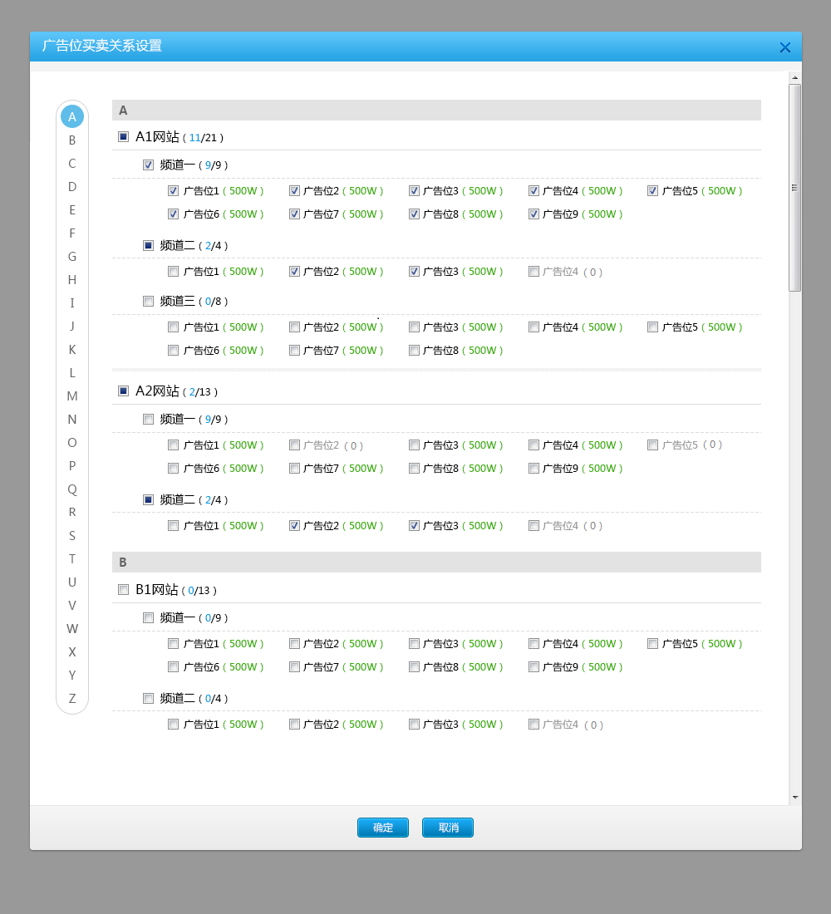

<!DOCTYPE html style="transform: translateZ(0px);">

<head>
    <meta http-equiv="Content-Type" content="text/html; charset=utf-8" />

<style>
#container{
	width:500px;
	height:200px;
	background: red;
}
#test1{
	width:200px;
	height: 1800px;
	background: #cccccc;
/* 	opacity: 0.5;
 */
}
#test2{
	top:-500px;
	border:1px solid;
	width:500px;
	height: 200px;
	background: #745E52;
	position: absolute;
}
#chartsContainer{
	position: fixed;
	top:100px;
	overflow: scroll;
}
</style>
<script type="text/javascript" src="/ssp_new/assets/c473a780/jquery.js"></script>
</head>
<body>
<!---->


<div id="container">
	<div id="test1" >
		
		<canvas id="canvas" width="10" height="10" style="">

	</div>
</div>
<div id="test2">
	<canvas id="canvas2" width="10" height="10" style="">

</div>


<!-- <video id="media"  loop muted src="images/test15s.mp4" controls width="480px" heigt="360px"></video>
 -->
 <div id="chartsContainer" style="width:1000px;height:500px;overflow:scroll">
<div id="charts" style="width:3600px;height:500px;background:#ccc">

</div>
</div>

 <script src="http://echarts.baidu.com/build/dist/echarts-all.js"></script>

<script>

var container = getEl('#container');
var test1 = getEl('#test1');
var test2 = getEl('#test2');
var img1 = getEl('#img1');
var canvas = getEl('#canvas');
var canvas2 = getEl('#canvas2');
var arr1 =new Array(360);
var arr2=new Array(360);
var arr3 = new Array(360);
var img = new Image();
img.src='images/test.png';
img1.src='images/test.png';
var count = 0;


function getEl(id){
	return document.querySelector(id); 
}

function draw(canvas){

	var start = performance.now();

	var ctx =canvas.getContext('2d');
	ctx.clearRect(0,0,10,10);
	ctx.shadowBlur=20;
	ctx.shadowColor="black";
	ctx.globalAlpha=0.2;

	for(var i=0;i<20;i++)
	{
		ctx.fillStyle = '#ffffff';
		ctx.strokeStyle = '#000000';
		ctx.fillRect(Math.random()*10,Math.random()*10,i+Math.random()*10,i+Math.random()*10);
	}
	ctx.getImageData(0,0,10,10);
  	var time = performance.now()-start;

  	//if(time>0.1)
  	//{
   		//console.log(canvas.id,time.toFixed(2));
   	//}
   	return time;
}


function process()
{
   var t2 = draw(canvas2);
  var t1 = draw(canvas);
 
  //var diff = Math.abs(t1-t2);
  t1 =  (t1*100).toFixed(2);
  t2 = (t2*100).toFixed(2);
  var t3 = Math.abs(t1 -t2);
  t1 = t1 > 500 ? 500 : t1;
  t2 = t2 > 500 ?  500 : t2;
  
  //if(diff>.0  && diff <1)
  //{
  	//console.log(t1,t2,t1-t2,count)
  //}
  //arr1.push(diff.toFixed(2));
  //arr2.push((t2*1000).toFixed(2));
    myChart.addData([
        [
            0,        // 系列索引
            t1, // 新增数据
            true,     // 新增数据是否从队列头部插入
            true     // 是否增加队列长度，false则自定删除原有数据，队头插入删队尾，队尾插入删队头
        ],
        [
            1,        // 系列索引
            t3, // 新增数据
            true,    // 新增数据是否从队列头部插入
            true,    // 是否增加队列长度，false则自定删除原有数据，队头插入删队尾，队尾插入删队头
        ]/*,
        [
            2,        // 系列索引
            t3, // 新增数据
            true,    // 新增数据是否从队列头部插入
            true,    // 是否增加
        ]*/
    ]);

		

  count++;

/*    myChart.addData([
        [
            0,        // 系列索引
            (t1*1000).toFixed(2), // 新增数据
            false,     // 新增数据是否从队列头部插入
            true     // 是否增加队列长度，false则自定删除原有数据，队头插入删队尾，队尾插入删队头
        ],
        [
            1,        // 系列索引
            (t2*1000).toFixed(2), // 新增数据
            false,    // 新增数据是否从队列头部插入
            true,    // 是否增加队列长度，false则自定删除原有数据，队头插入删队尾，队尾插入删队头
        ]
    ]);*/
  //todo:画曲线 百度图表
  //img1.style.marginLeft = Math.random()*10+'px';
  //img1.style.marginTop = Math.random()*10+'px';
/*  var arr=[];
 for(var i=0;i<10000;i++)
 {
 	arr.push('a'+i);
 }*/

  /*test2.innerHTML = arr.join('<br/>');
  test2.style.fontSize ='16px';
  test2.style.color = 'green';
  test2.style.textShadow = '2px 3px 2px #000';
  i
  var style = window.getComputedStyle(test2,null);
  var imgStyle = window.getComputedStyle(img1,null);
   console.log(style['height']);
   console.log(imgStyle['width']);
  console.log(style['textShadow']);
  console.log(style['fontSize'],style.color);*/


  	if(count<3600)
  	{
 		requestAnimationFrame(process);
 		
  	}
  	else
  	{


  		console.log('end');

  	}

}


		  var myChart = echarts.init(document.getElementById('charts')); 
		        
		  var option = {
		    title : {
		        text: 'cpu',
		        subtext: '纯属虚构'
		    },
		    tooltip : {
		        trigger: 'axis'
		    },
		    legend: {
		        data:['t1']
		    },
		    toolbox: {
		        show : true,
		        feature : {
		            mark : {show: true},
		            dataView : {show: true, readOnly: false},
		            magicType : {show: true, type: ['line', 'bar']},
		            restore : {show: true},
		            saveAsImage : {show: true}
		        }
		    },
		    calculable : true,
		    xAxis : [
		        {
		            type : 'category',
		            boundaryGap : false,
		            data : (function(){
		            	var d=[];
		            	for(var i=1;i<360;i++)
		            	{
		            		d.push(i);
		            	}
		            	return d;
		            })()
		        }
		    ],
		    yAxis : [
		        {
		            type : 'value',
		            axisLabel : {
		                formatter: '{value} '
		            }
		        }
		    ],
		    series : [
		        {
		            name:'t1',
		            type:'line',
		            data:arr1,
		            markPoint : {
		                data : [
		                    {type : 'max', name: '最大值'},
		                    {type : 'min', name: '最小值'}
		                ]
		            },
		            markLine : {
		                data : [
		                    {type : 'average', name: '平均值'}
		                ]
		            }
		        },
		        {
		            name:'t2',
		            type:'line',
		            data:arr2,
		   
		            markLine : {
		                data : [
		                    {type : 'average', name : '平均值'}
		                ]
		            }
		        }/*,
		        {
		            name:'t3',
		            type:'line',
		            data:arr3,
		   
		            markLine : {
		                data : [
		                    {type : 'average', name : '平均值'}
		                ]
		            }
		        }*/
		    ]
		};
		  myChart.setOption(option); 

requestAnimationFrame(process);
//setInterval(process,16);


/*var video = document.getElementById('media');

video.playbackRate =0.5;

function process()
{
	console.log(video.defaultPlaybackRate,video.playbackRate,video.currentTime);
	//requestAnimationFrame(process);
}
//requestAnimationFrame(process);
setInterval(process,1000);
*/</script>
</body>
</html>